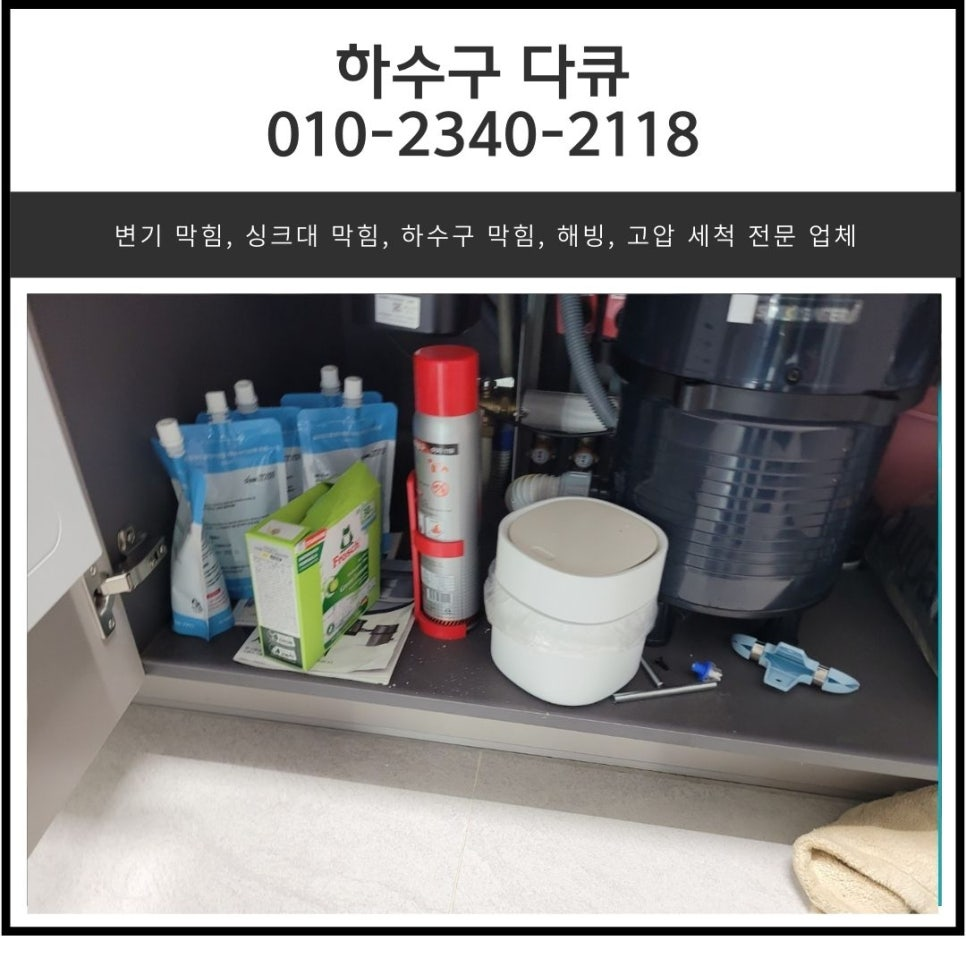
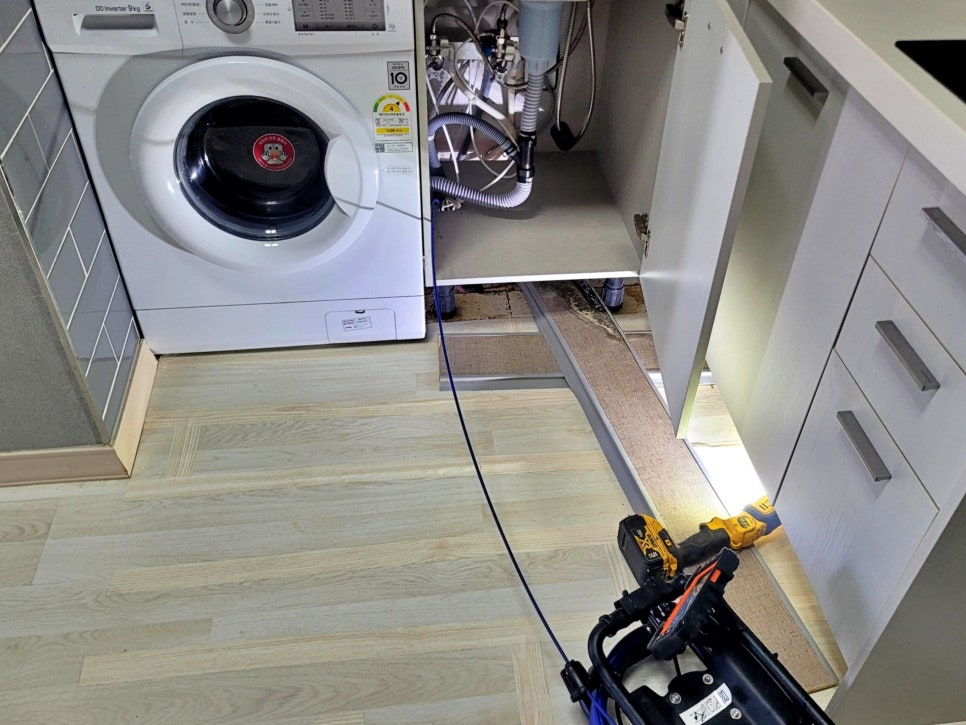
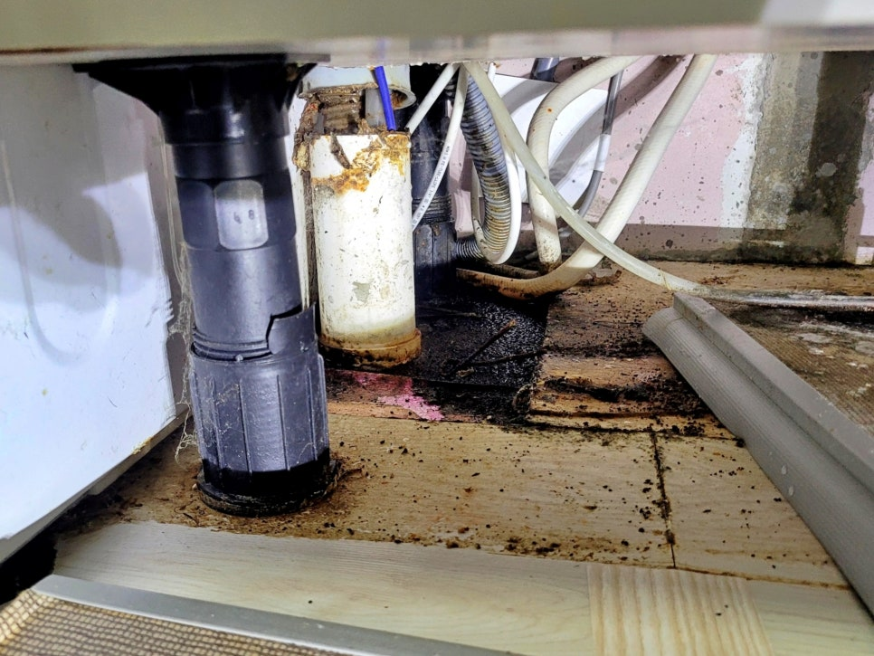
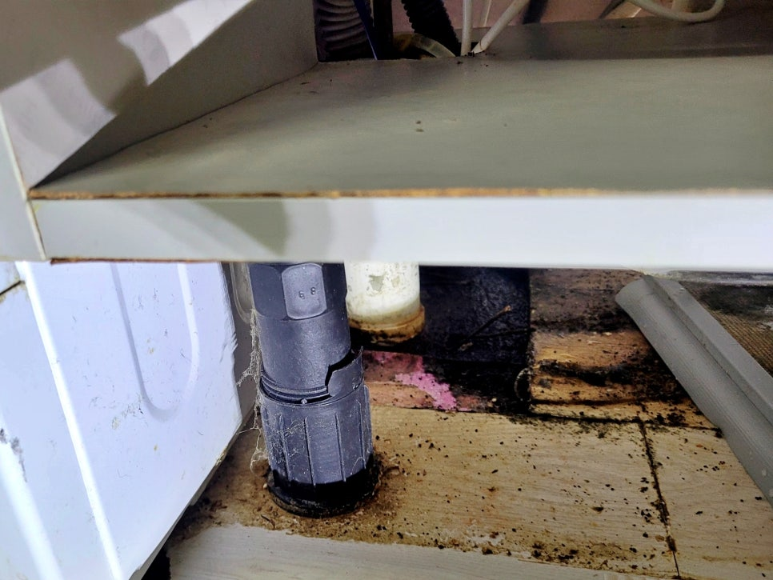
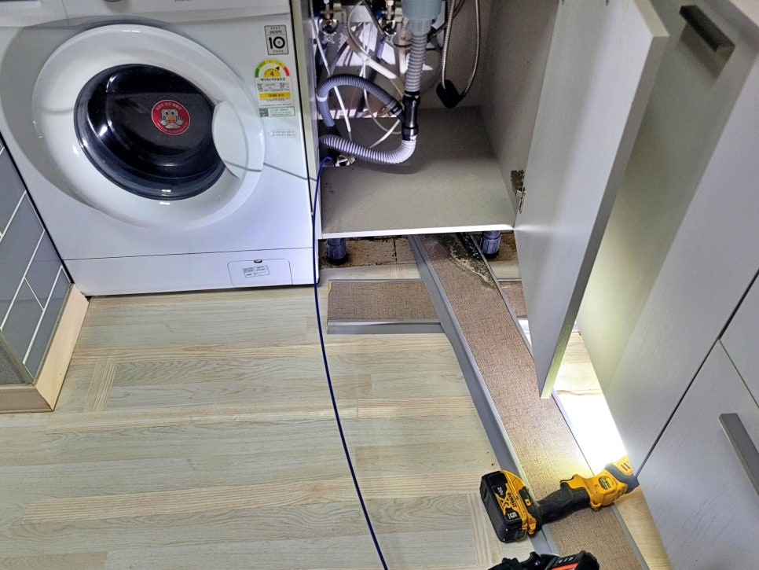
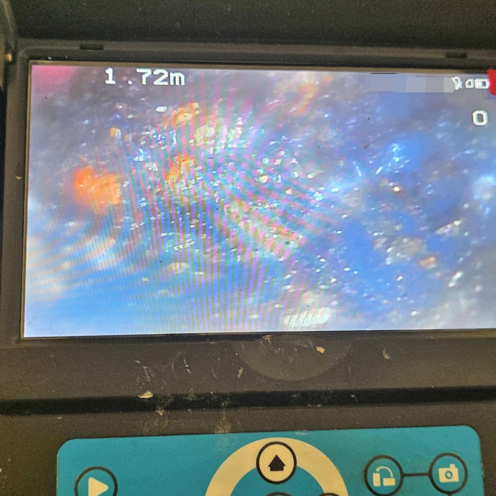

🏠 병점동 싱크리더 음식물 처리기 막힘 화성 반월동 싱크대 물 넘침
화성 병점 싱크대막힘 전문 시공 후기

📋 작업 개요
- 위치: 화성 병점, 병점, 화성
- 서비스 유형: 싱크대막힘, 하수구막힘, 배관막힘, 역류해결, 배관청소
- 작업 일시: 2025. 1. 7. 21:59
- 업체명: 하수구수사대 (010-5615-2118)
🔍 문제 상황
화성 병점동 싱크대 배관역류,
기름막힘 배수구청소 현장
안녕하세요.
화성 병점동 싱크대 배관역류 현장을
다녀온 하수구수사대입니다.
오늘 소개해 드릴 현장은 오피스텔
싱크대에서 물이 잘 빠지지 않고,
하부장 안쪽으로 역류 흔적이 보여
출동한 사례인데요.
화성 병점동 오피스텔 싱크대막힘 현장 사진
겉으로는 단순한 배수구막힘처럼
보일 수 있었지만,
현장에서 확인해 보니 문제는
안쪽 라인에 있었습니다.
화성 병점동 싱크대 역류 현장 개요
1. 현장위치: 화성 병점동 오피스텔
2. 주요증상: 싱크대 배관역류
3. 확인원인: 배관 내부 기름막힘
4. 사용장비: 내시경 카메라, 샤프트 장비
5. 작업내용: 배수구청소 및 배관 막힘 제거
6. 작업결과: 배수 테스트 이상 없음
싱크대 배관역류 원인 확인
싱크대 하부장 안쪽 배관 상태를 확인함
현장에 도착해 싱크대 하부장을 열어보니
하부장 주변과 바닥 쪽에

🔎 원인 분석
💡 전문가 진단: 슬러지와 이물질이 통로를 꽉 막고 있어 배수가 불가능하며, 정밀 타격 및 배관 세척이 동반되어야 해결 가능합니다.
오염물이 묻어 있었습니다.
이런 흔적은 물이 안쪽으로
시원하게 빠지지 못하고,
안쪽에서 밀리면서 생기는 경우가 많습니다.
배관 주변에 남아 있는 역류 오염 흔적 발견함
특히 오피스텔은 주방 공간이 좁고
싱크대 하부 라인과 주변 호스가
가깝게 붙어 있는 경우가 많은데요.
그래서 겉에 보이는 물만 닦고
끝내면 안 됩니다.
내시경 카메라로 배관 내부 상태 확인 중
입구를 정리한 뒤 내시경 카메라를
넣어 안쪽 상태를 먼저 확인했고요.
배관 안쪽에 쌓인 기름막힘을 발견함
화면으로 보니 배관 벽면에
기름때와 음식물 찌꺼기가 엉겨 붙어
배수 공간을 좁히고 있었습니다.
싱크대 배관역류는
대부분 갑자기 생기는 문제가 아닌데요.
설거지할 때 흘러간 기름기,
음식물 찌꺼기, 세제 찌꺼기가
조금씩 배관 안쪽에 붙고,
시간이 지나면서 물길을 좁힙니다.
이번 현장도 겉에서는
물만 안 빠지는 것처럼 보였지만,

🔧 작업 과정
실제 원인은 배관 내부 기름막힘이었습니다.
샤프트 배수구청소와 재확인
샤프트 장비로 배관 청소를 진행하는 모습
원인을 확인한 뒤 샤프트 장비로
배수구청소를 진행했는데요.
이번 작업은 배수구 입구만 닦는
단순 청소가 아니었습니다.
샤프트 케이블을 안쪽으로 넣고
회전시키면서 벽면에 붙은 기름때와
찌꺼기를 긁어내는 방식으로 진행했습니다.
작업 중 장비에는 검은 갈색 오염물이
묻어 나왔습니다.
기름때와 음식물 찌꺼기가 섞인 오염물 사진
사진에 보이는 오염물은 배관 안쪽에
쌓여 있던 기름때와 음식물 찌꺼기가
섞여 나온 것으로 보입니다.
이번 현장이 까다로웠던 부분은 공간이 좁고
배관 주변에 호스가 많아 장비 각도를
조심스럽게 잡아야 했다는 점인데요.
배수구 청소 후 내시경 카메라로 배관 내부 재확인
무리하게 넣으면 라인에 부담이 가고,
약하게 작업하면 오염물이 제대로
떨어지지 않을 수 있습니다.
작업 후에는 다시 내시경 카메라를 넣어
배관 안쪽 상태를 확인했고요.
작업 전에는 기름막힘이 보였던 구간이
작업 후에는 배수 흐름이 확보된 상태로
확인됐습니다.
작업 후 싱크대 배수 상태 이상 없음을 확인한 모습
마지막으로 싱크대 물을 충분히 흘려보내
배수 테스트를 진행했습니다.
물이 고이지 않고 정상적으로 빠졌고,
하부장 안쪽으로 다시 밀려 나오는 증상도
확인되지 않았습니다.
화성 병점동 싱크대막힘 시공기를 마치며
화성 병점동 오피스텔 싱크대 배관역류
현장은 내시경으로 원인을 확인하고,
샤프트 장비로 기름막힘을 제거한 뒤,
배수 테스트까지 이상 없음을 확인하고
마무리했습니다.

✅ 작업 완료
싱크대 물이 늦게 빠지거나
하부장에서 냄새가 올라오거나,
배수구 주변으로 물이 밀린다면
입구만 보고 판단할 일이 아닙니다.
하수구수사대는 보이는 막힘만
처리하지 않고, 배관 안쪽 원인을
확인한 뒤 현장에 맞는 방식으로
배수구청소를 진행합니다.
감사합니다.
하수구수사대였습니다.
#화성병점동싱크대막힘 #병점동싱크대배관역류 #화성싱크대배관역류 #병점동배수구청소 #화성배수구청소 #병점동오피스텔싱크대막힘 #화성병점동싱크대기름막힘 #하수구수사대




⚠️ 주방 싱크대 배관 막힘 예방 수칙
- ✅ 기름기가 묻은 식기나 프라이팬은 설거지 전 키친타올로 반드시 기름때를 닦아내세요.
- ✅ 주기적으로 싱크대 개수대에 뜨거운 물을 가득 받아 한 번에 내려 배관 내부 기름을 씻어내세요.
- ✅ 배수구 거름망을 미세한 필터로 사용하시고 음식물 찌꺼기가 틈으로 새어 들지 않게 관리하세요.
- ✅ 베이킹소다와 식초를 뜨거운 물과 함께 일주일에 한 번씩 부어주면 배관 살균과 막힘 예방에 좋습니다.
💡 핵심 정리
- 확실한 장비 작업(내시경 점검 및 샤프트 스케일링)으로 원인을 뿌리 뽑습니다.
- 작업 후 1년 이내에 동일한 부위 재발 시 100% 무상 A/S 서비스를 보장합니다.
- 서울 · 경기 · 인천 전 지역에 24시간 언제든 긴급 출동할 수 있도록 항시 대기 중입니다.
❓ 자주 묻는 질문 (FAQ)
🚨 화성 병점 싱크대막힘 문제로 고민이신가요?
정확한 원인 진단과 확실한 시공으로 재발 없는 해결을 약속드립니다.
24시간 긴급 출동 | 서울 · 경기 · 인천 전지역 | 1년 내 재발 시 무상 A/S